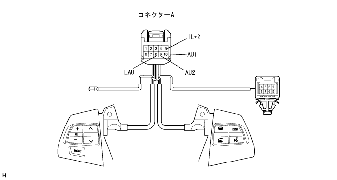

Steering Pad Switch Assembly (3-spoke Steering Wheel) Inspection |
| 1. Inspect Steering Pad Switch Assembly |

Resistance Inspection
Using SST (Toyota electrical tester), measure the resistance between each terminal of the steering pad switch assembly connector when the audio switches are operated.
| Tester Connection (Terminal Symbol) | Condition | Standard |
|---|---|---|
| A10(AU1) - A8(EAU) | No switch pushed | 95 to 105 kΩ |
| A10(AU1) - A8(EAU) | SEEK+ switch pushed | Below 2.5 Ω |
| A10(AU1) - A8(EAU) | SEEK- switch pushed | 313 to 345 Ω |
| A10(AU1) - A8(EAU) | VOL+ switch pushed | 950 to 1050 Ω |
| A10(AU1) - A8(EAU) | VOL- switch pushed | 2955 to 3265 Ω |
| A9(AU2) - A8(EAU) | No switch pushed | 95 to 105 kΩ |
| A9(AU2) - A8(EAU) | MODE switch pushed | Below 2.5 Ω |
| A9(AU2) - A8(EAU) | On-hook switch pushed | 313 to 345 Ω |
| A9(AU2) - A8(EAU) | Off-hook switch pushed | 950 to 1050 Ω |
| A9(AU2) - A8(EAU) | VOICE switch pushed | 2955 to 3265 Ω |
Illumination Inspection (Night Illumination)
When battery positive (+) is connected to terminal A-5 (IL+2) and battery negative (-) is connected to terminal A-8 (EAU), check that the illumination (LED) in the steering pad switch assembly comes on.